PAGINA 1 (CONTINGUT)
AQUARIUS ORIGINAL
¿Quién nos iba a decir en 1992 que la familia AQUARIUS iba a ser tan numerosa?Y es que no hemos parado de crecer desde entonces, creando diferentes variedades de AQUARIUS para cada estilo de vida. Porque algo tenemos claro, queremos que absolutamente todo el mundo pueda disfrutar de AQUARIUS, una bebida que no solo refresca, sino que también gracias a sus aportes, te hace sentir bien.
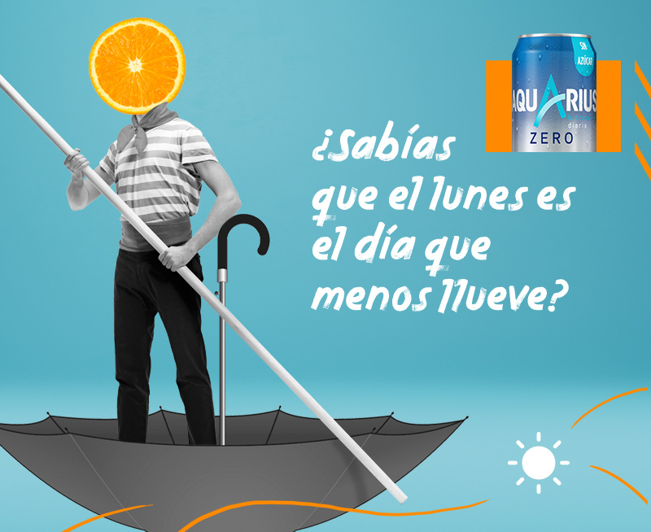
El lunes es el día que menos llueve
Hay muchas razones para odiar el primer día de la semana y una muy poderosa que ayuda a enfrentarse a él con una buena actitud y la mejor de las sonrisas
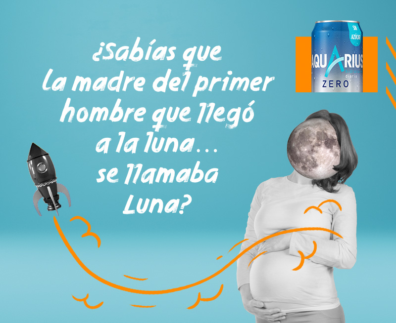
La madre del primer hombre que llegó a la luna… se apellidaba luna
El mundo está lleno de curiosidades y esta es una de esas que da que pensar. ¿Será solo una casualidad de la vida o hay otra explicación más profunda?
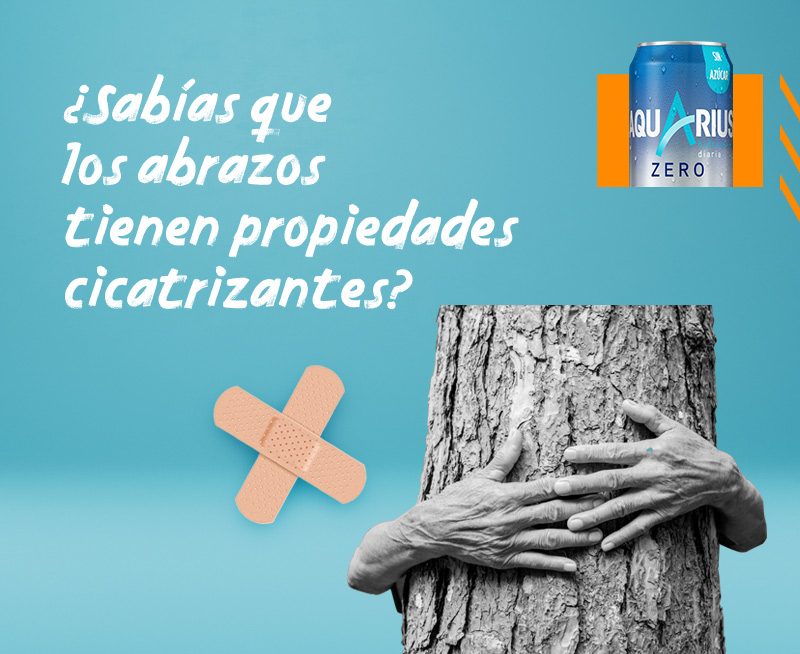
Los abrazos tienen propiedades cicatrizantes
La mejor medicina para algunas dolencias no necesita doctores ni medicinas, basta con un buen amigo que te acoja entre sus brazos
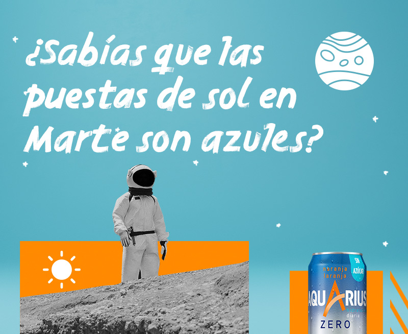
Curiosidades de Marte
¿Puede haber algo más romántico que contemplar un atardecer rojizo? Tal vez uno azul mientras ves caer asteroides a la velocidad del rayo, como si fueran estrellas fugaces.
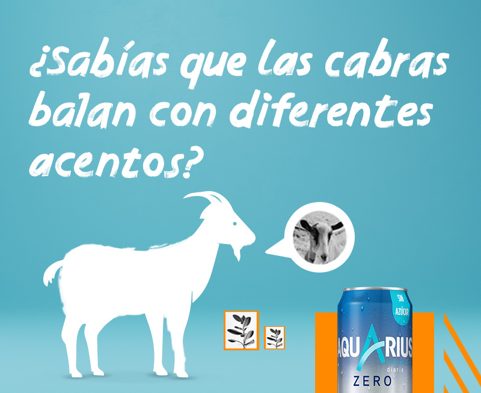
Las cabras balan en diferentes acentos
La próxima vez que te digan que estás como una cabra quizá no quieran decir lo que estás pensando. No te lo tomes a mal, a lo mejor es un piropo. Sigue leyendo y saca tus propias conclusiones.
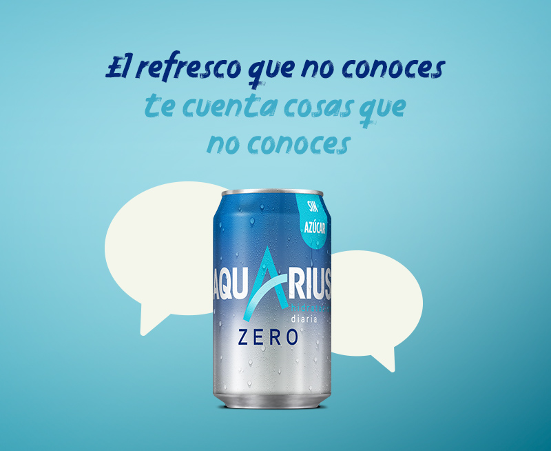
Nueva Guinea y su diversidad lingüística
Esta isla de Oceanía alberga ella sola la mayor diversidad lingüística del mundo... y solo tiene ocho millones de habitantes. Increíble, pero cierto.
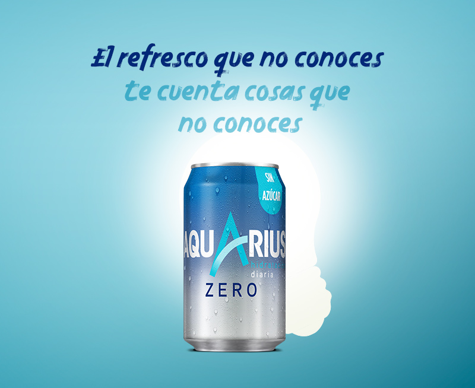
No es broma, Thomas Edison tenía miedo a la oscuridad
Con el invento de la bombilla incandescente quizá buscaba superar su temor o tal vez fue pura casualidad, pero acabó iluminando su vida.
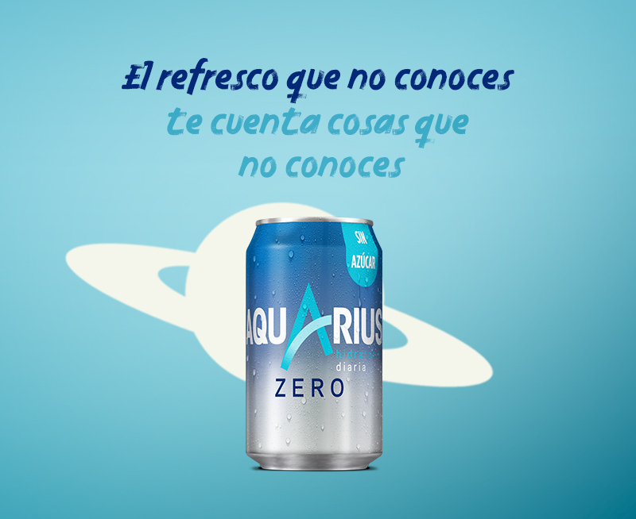
En el espacio no se puede llorar, aunque nadie lo prohíbe...
A los astronautas es difícil que se les escape una lagrimilla, y no por falta de ganas, que las tienen, sino por puro dolor.
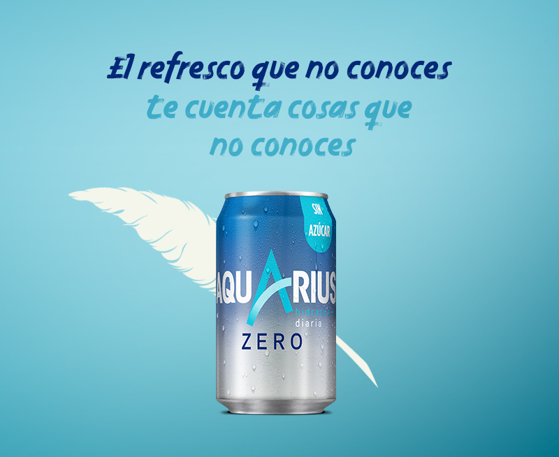
Víctor Hugo escribía desnudo, ¿y qué?
Nada. Conseguía su propósito, parir obras de arte. Lo que menos importa es si lo hacía en cueros o vestido de cartaginés. Hemingway, Lawrence o Christie también siguieron su ejemplo... y no les fue me
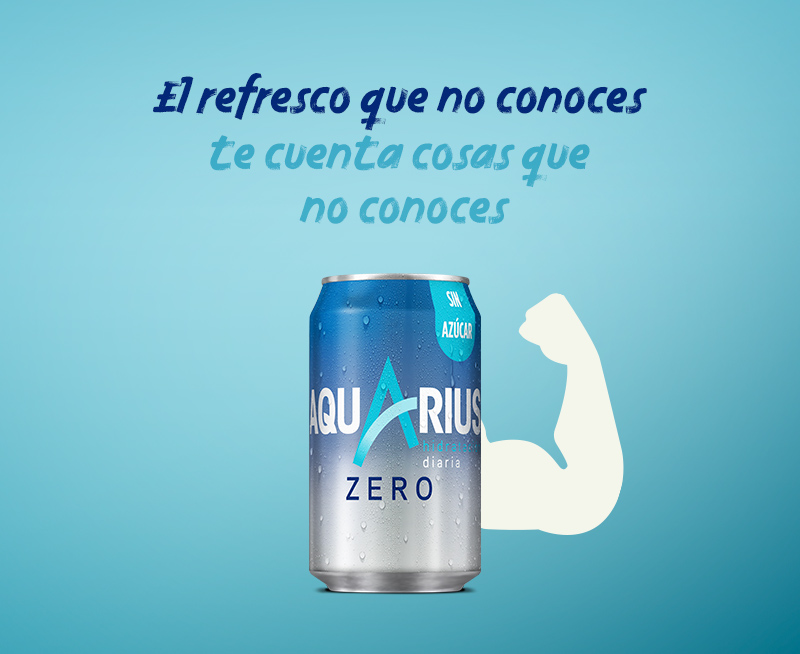
Mira a la cámara...y ¡sonríe! Te sentirás mejor que nunca
Sonreír es gratis, contagioso y fácil, solo necesitas mover 17 músculos, en lugar de los 43 que requiere fruncir el ceño. A cambio relaja, ayuda a empatizar y reduce el estrés. Vale la pena, ¿no?
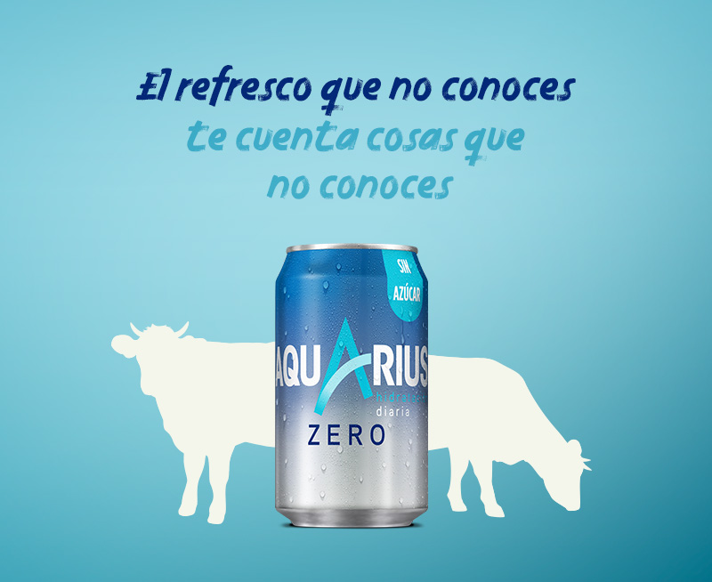
Las vacas que tienen amigas son más felices...y muuuuuy productivas
Demostrado, los animales también tienen sentimientos, al menos los bovinos. Hacer ‘pandi’ les alegra la vida y, de paso, mejora su frecuencia cardíaca y reduce sus niveles de ansiedad.